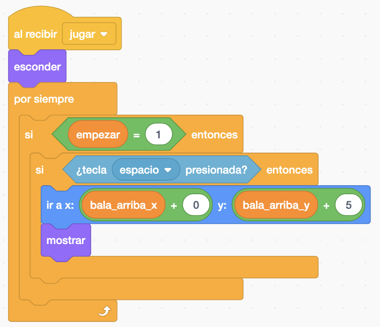
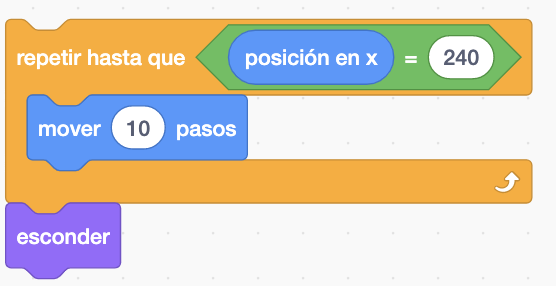
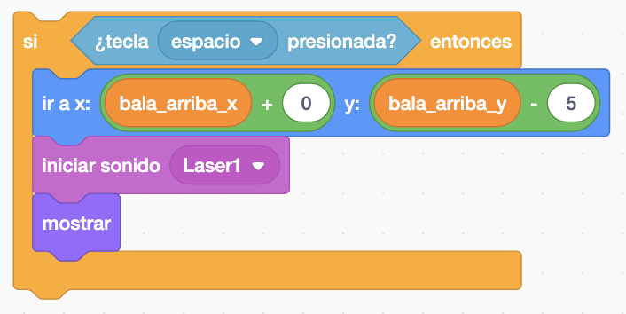
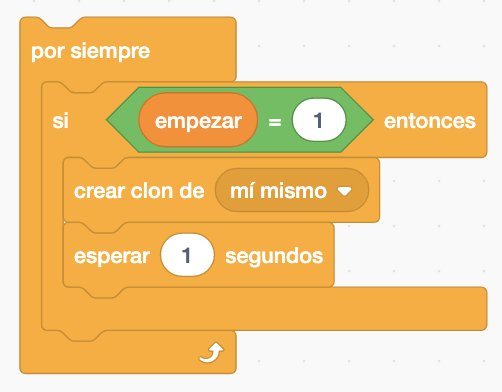
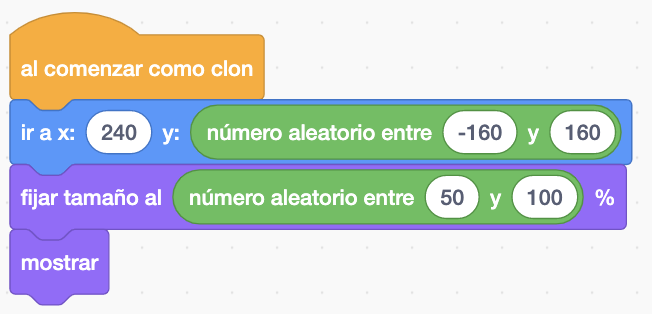
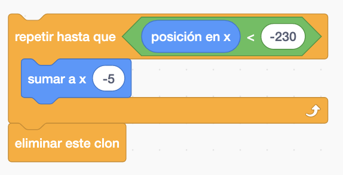
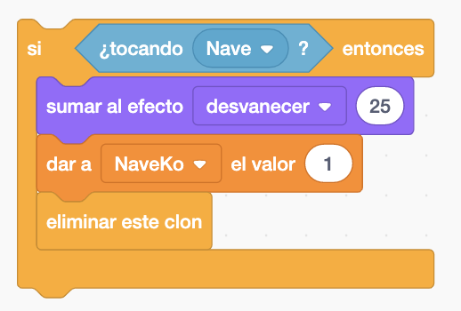
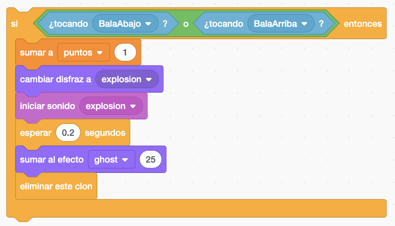
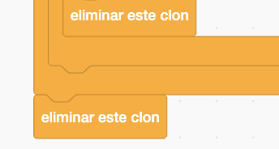

Nave, bala arriba, bala abajo, asteroide y un botón de play.
Necesitamos dos, el escenario starts y escenario portada.
El juego consiste en ir destruyendo asterioides que apareceran por la derecha de distinto tamaño.
Pondremos el escenario portada y el botón de play. Crearemos también una variable "empezar" para que mientras este igual a 0 no se podrá jugar.


Cuando demos al botón de Play lo esconderemos y cambiaremos el fondo a escenario start.

Si la variable "empezar" este igual a 1 se podrá jugar.

También se podría hacer en vez de crear una variable usar el bloque "detener" llamandoló con un "enviar y recibir".
La nave nada más empezar el juego la posicionamos, le ponemos el disfraz "Nave1", la escondemos y crearemos una variable "puntos" que la esconderemos también y la inicializamos a 0. Y nos falta una última variable "NaveKo" que la inicializamos a 0 y cuando la destruyan le pondremos a 1.

Cuando comienza el juego haremos cambio de disfraz de la nave siempre que las variables "empezar" será igual a 1 y "NaveOK" será 0 ya que todavía no la han destruido.

El movimiento de la nave serán con las cuatro flechas pero comprobaremos en que posición se encuentra antes de dejar darle a la flecha. No podrá pasar de la "X > 0" cuando le demos a la tecla derecha.

Guardaremos continuamente la "posición en x" y "posición en y" en dos variables "bala arriba x" y "bala arriba y".

Cuando "empezar" y "NaveKo" es igual a 1 ha empezado el juego y han destruido a la nave asi que cambiamos el disfraz de la nave a explosión y se terminará el juego.

Podemos hacer que la nave tenga 3 vidas, con varios disfraces de que está destruida la nave. Y un Game Over.
El "recibir terminar juego" detendrá otros programas del objeto.

La Bala Arriba dispará al presionar el espacio. Posicionara la bala en las variable de "bala arriba x" y "bala arriba y". La Y la subiriamos un poco para que este centrado.

Nada más dar al espacio haremos un repetir y la moveremos hasta que llegue a una determinada posición y la escondemos.

La Bala Abajo hará exactamente lo mismo que la Bala Arriba pero la Y la posicionamos un poco más abajo. Y haremos un sonido.

La Bala Abajo también tendrá un "recibir terminar juego" al igual que el Asteroide.
El Asteroide tendrá clones.

El original siempre se esconde y el que se muestra es el clon ya que será el clon quien se mueva.
El Asteroide se posicionara en la misma X de la derecha pero tendra en la Y un número aleatorio.

sEl Asterioide se moverá hacia la izquierda com el bloque de "sumar a x" hasta que llegue a una determinada posición de X.

Dentro del repetir pondremos el bloque de si tocamos a la Nave. Hacemos un desvanecer y la variable "NaveKo" la ponemos a 1 para que termine el juego. Y se elimina el clon

Dentro del repetir pondremos otro bloque para si el Asteroide toca a la Bala arriba y Bala abajo sumariamos "puntos", cambiamos disfraz a explosión y hacemos otro efecto de desvanecer. Y se elimina el clon.

Cuando termina el repetir también eliminaremos el clon por si no ha tocado ni el Asteroide ni la Nsave.

Y el juego quedaría así.

Para descargarte el juego terminado pulsa aquí.